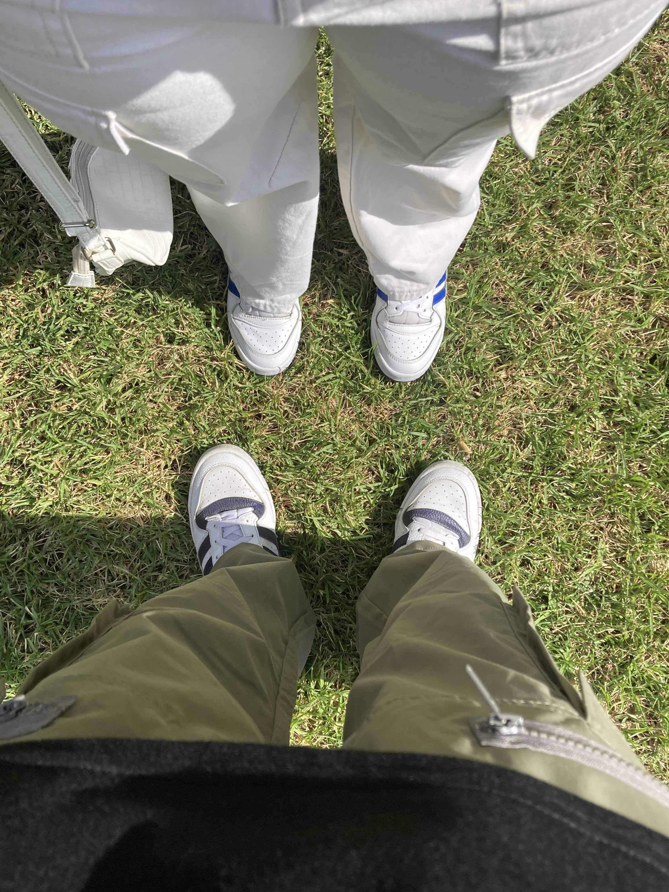
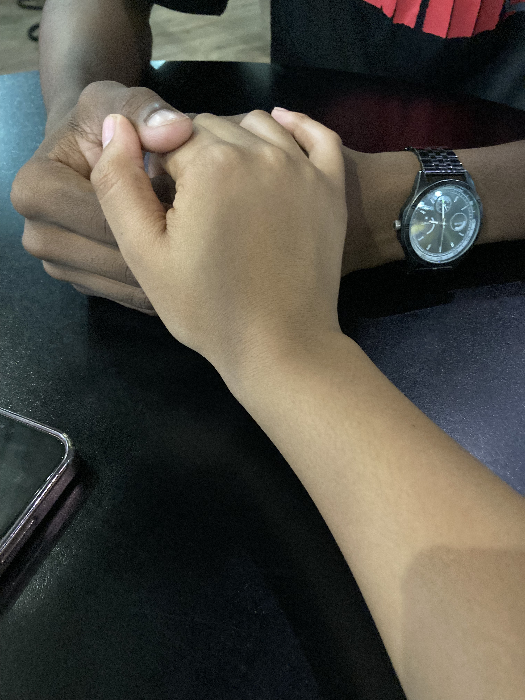

☰
Account Information
Recipes
Home
00
Months
00
Days
00
Hours
00
Minutes
00
Seconds
Today's Verse: Handpicked by your man
How are you feeling?
Pains
Sad
Anxious
Burnt Out
Period pains
At-Home Remedies
Use a heating pad or hot water bottle on the lower abdomen.
Take a warm bath.
Drink plenty of water to help reduce bloating.
Eat light, nutritious meals.
Avoid caffeine and salty foods.
Drink chamomile, ginger, or peppermint tea, which may help soothe cramps.
Take Painkillers as directed on the package.
Engage in gentle activities like walking or yoga to help improve circulation and reduce stress.
Feeling Sad
At-Home activities
Watch Young Sheldon
Listen to Gospel music or your Brent
Read the book of Romans
Do a fun activity with Lerato
Write in a journal or express your feelings
Call Tshepiso
Read a book or a favorite magazine
Take a relaxing bath with candles and soothing music
Cook or bake something you enjoy
Look through old photos and reminisce about happy memories
Play a game or do a puzzle
Visit a favorite place or explore a new one
Enjoy a cup of tea or coffee
Watch funny videos or stand-up comedy
Practice deep breathing exercises
Watch horror movie
Plan a future adventure or trip
Watch TT's
Spend time in a cozy, comfortable space
Reflect on personal achievements and successes
Feeling Anxious
At-Home activities
Practice deep breathing exercises or meditation.
Go for a walk or engage in physical activity.
Listen to calming music or nature sounds.
Write down your thoughts in a journal.
Do some gentle yoga or stretching exercises.
Talk to a friend or family member about your feelings.
Read a book or watch a movie to distract your mind.
Engage in a creative activity like drawing or painting.
Drink herbal tea, such as chamomile or lavender.
Take a warm bath with relaxing scents like lavender or eucalyptus.
Practice gratitude by writing down things you are thankful for.
Try a mindfulness app or guided meditation.
Spend time with a pet if you have one.
Organize a small area of your home.
Focus on your breathing and try to slow it down.
Feeling Burnt Out
At-Home activities
Take short breaks during study sessions to rest your mind.
Go for a walk or do some light exercise to refresh yourself.
Listen to your favorite music to relax and recharge.
Organize your study space to create a more conducive environment.
Practice mindfulness or meditation to calm your mind.
Take a power nap to restore energy and focus.
Drink plenty of water and eat healthy snacks to maintain energy levels.
Connect with friends or family for support and encouragement.
Set realistic goals and break tasks into smaller, manageable chunks.
Engage in a hobby or activity that you enjoy to take your mind off schoolwork.
Read a book or watch a show that you find enjoyable and relaxing.
Try deep breathing exercises to reduce stress and anxiety.
Write down your thoughts and feelings in a journal.
Plan a fun activity or reward for yourself after completing your schoolwork.
Get enough sleep to ensure you are well-rested and alert.
February 2025
20
20
♥
March 2025
21
21
♥
August 2025
8
8
♥


Open Chatbox
×
Chat to Lethabo, your personal chatbox
Send